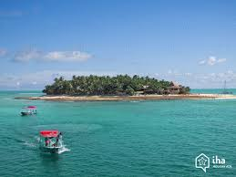
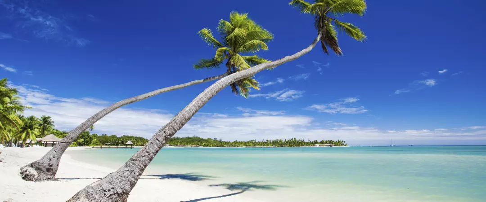

Fiji offers many boat tours around the beautiful and exotic islands. You can see the nature and animal life that it has to offer. One of the most popular boat tour is to the Namena Marine Reserve. The waters has over 1,500 spices of fish and hundreds of colors of coral.

When staying in Fiji, there are many comfortable places to stay. A fan favorite, and the ultimate getaway are the bungalows. Although they are on the more exspensive side, they offer amazing views, luxury, and great memories. Fiji is known for its beaches. The beaches have crystal clear waters,powdery white sand, and lush greenery. There are many differnt beaches, and hundreds of activites you can do to enjoy your time on the beach.
